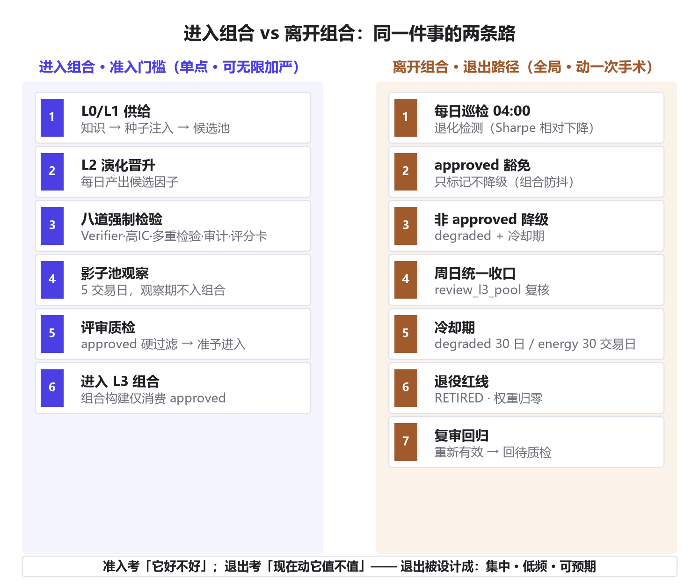
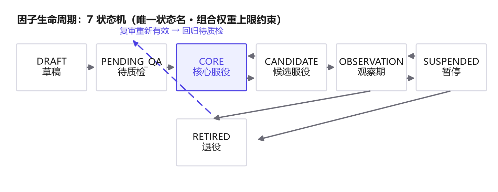

因子会生，也要会退
给量化因子写一套「退休制度」
「各归其位」系列 · 量化工程篇
昨天深夜，系统又产出了 47 个新因子。我盯着晋升日志看了很久，想的不是它们怎么进来——
而是它们哪天、以什么方式，退出组合。
量化系统最被高估的能力，是「生孩子」。真正被低估的，是「体面地送走孩子」。
01
本质问题：因子是「生」出来的，不是「造」出来的
我的因子不是造出来的，是生出来的。L0 知识供给、L1 种子注入、L2 演化循环，每天自动产出一批候选因子，走完八道检验才能晋升为精英。
入口的门槛已经足够硬：Verifier 锁定、去冗余、高 IC 筛查、多重检验校正、样本外验证、六项审计、质量评分卡，层层设卡。
但你会发现一个不对称：系统的所有制度都在管「进来」，几乎没有制度在管「出去」。
因子长期劣化、失效之后，谁来让它们离场？如果让它们自然烂在库里，它们会继续留在组合权重里，日复一日地拖累信号。
第一性原理：任何一个会「自动产出」的系统，长期质量不取决于入口有多严，而取决于出口有没有制度。
入场是油门，退场是刹车。只踩油门不装刹车的车，不是跑得快，是活不长。
02
第一性原理：准入与退出的不对称性
为什么出口的制度更难设计？因为准入是「单点」的，退出是「全局」的。
一个因子晋升失败，损失的是它自己——一条候选记录，没了就没了。一个因子退出组合，牵动的是一整套系统：组合权重要重排、信号要重算、交易成本要重付、归因要重做。
退出从来不是删一行数据，是动一次手术。
所以退出规则的设计目标不是「严格」，而是「稳定地严格」：既不能放走已经坏掉的因子，也不能因为一次短期波动，把好因子每天折腾一遍。
这两件事天然冲突。放走坏因子要求「敏感」，不折腾好因子要求「钝感」。好的退出制度，是同时装上这两种相反的东西。
准入考的是「它好不好」，退出考的是「现在动它，值不值」。
03
同构论证：长寿命系统的共同答案
自然界早就回答了这个问题。你的免疫系统每天新生上百万免疫细胞，真正难的不是杀敌，是「免疫耐受」——认得清自己人。误伤自己人，叫自身免疫病。
翻译成量化语言：免疫耐受 = 组合防抖。一个因子在组合里服役多年、立过功，系统对它的短期波动应该天然宽容；只有当它持续退化、越过某条线，才值得动它。
再看组织。为什么军队和公司要给老兵设计退役制度、给董事设计任期？因为「体面退出」比「激烈准入」更考验制度。一个只会纳新、不会谢幕的组织，最后会死于自己每天招进来的新人——没有位子给它们，也没有规则让旧人离开。
图书馆学里有个库普曼定律：一本书的价值，不只看它当年的借阅量，还要看它在后来几十年里被引用的次数。判断一本书该不该下架，不能看它「曾经多好」，要看它「现在还好不好用」。
所有活过周期的系统，都有一套「低误伤」的退出制度。没有这套制度的系统，会死于自己每天的产出。
04
工程映射：我们在 FTS 里怎么落地
接下来是工程事实。我们给因子生命周期写了一套制度，核心五件事，每一件都对应一个具体的问题。

问题一：状态混乱。因子有七种状态：草稿、待质检、核心服役、候选服役、观察期、暂停、退役。状态机是死的，名字必须唯一——一个状态一个名字，别名统一归一。我们为此砍掉了三个「同名不同义」的 FactorStatus。

为什么需要中间态？因为没有中间态的系统，宿命是「非生即死」——因子要么挤进组合，要么被删掉，每天都是全有或全无的波动。中间态给了系统缓冲。
问题二：谁有权进组合。进组合必须过评审质检：只有被标记 approved 的因子，才被 L3 组合消费。这是硬过滤，不是建议。把「决策」从「流程」里拆出来——演化负责产出，评审负责准入。
问题三：组合抖动。这是这套制度里最反直觉的一条：approved 因子在每日巡检里被豁免降级。检测到它退化了？只标记，不动它，统一放到周日复核收口。
为什么？因为每次降级都意味着组合变动。高频退出 = 高频交易成本 + 无法归因 + 组合持续漂移。把退出收敛到每周一次、集中复核，组合每周至多变动一次。这是这套制度里最有争议的决定，也是诚实的部分：我们用一个星期的时间差，换组合一整周的稳定。
问题四：降级之后。降级的因子进入冷却期，30 天之内不再参与演化评估。到期重新评估合格，可以回归，甚至复用原来的因子 ID——保留血缘，不新建身份。冷却不是惩罚，是缓冲带。它拦截的是「情绪化决策」：昨天刚降级，今天就急着重新评估，那不是优化，是应激。
问题五：谁在执行。整套制度由定时自动化执行，不再依赖人肉提醒。巡检 04:00、逻辑监控 04:30、数据级监控 05:00、周度评审周日 10:00，调度源只有一个，不重复执行。
我们没有发明新规则，只是把「退出」这个最容易被忽视的环节，写成了与「进入」同等规格的制度。
05
诚实的边界：这套制度替我们承担了哪些风险
必须承认，所有防抖机制的本质，都是用反应速度换操作频率。钝和稳是同一枚硬币。
第一条反方证据：豁免意味着延迟。approved 因子如果在一周内从健康到爆雷，制度最坏有 7 天的反应延迟。市场不给面子的时候，7 天可能就是全部。
第二条：双重门槛可能过严。一个因子要同时满足「绝对标准足够好」和「相对趋势没有退化」才保得住位置。两个标准各自合理，叠加起来会不会误杀还在成长的因子？目前的设计取向是宁严勿松，但这是选择，不是真理。
第三条：状态机的中间态可能养出僵尸。长期停在观察期、既不升也不退的因子，是制度里的灰色地带。制度给了它身份，却没给足它结论。
还有更根本的一条：全部自动化之后，制度缺陷会系统性发生，而不是一次偶然事故。我们把规则写死了，也就把规则的错误写死了。
自动化负责执行制度，但制度本身是否合理，仍然需要人周期性地回头看。
06
修正后的判断
回到开头。系统每天产出几十个新因子，我不再焦虑它们怎么进来——入口已经足够硬。我真正关心的，是出口的每一道工序：它够不够稳，够不够钝，够不够诚实。
量化系统里最稀缺的，从来不是「发现新因子的能力」，而是「体面告别旧因子的制度」。
孩子会生，也要会放手。这是我在给因子上退休制度这件事上，学到的最重要的一件事。
以上是架构事实与判断结论的混合。状态机、防抖、冷却这些是事实；「钝和稳是同一枚硬币」是我的判断，你可以不同意。具体到你自己的系统：如果它产出的因子总量不大、组合也不频繁变动，也许不需要这么重的制度——轻一点，也是一种选择。
「各归其位」系列 · 持续更新